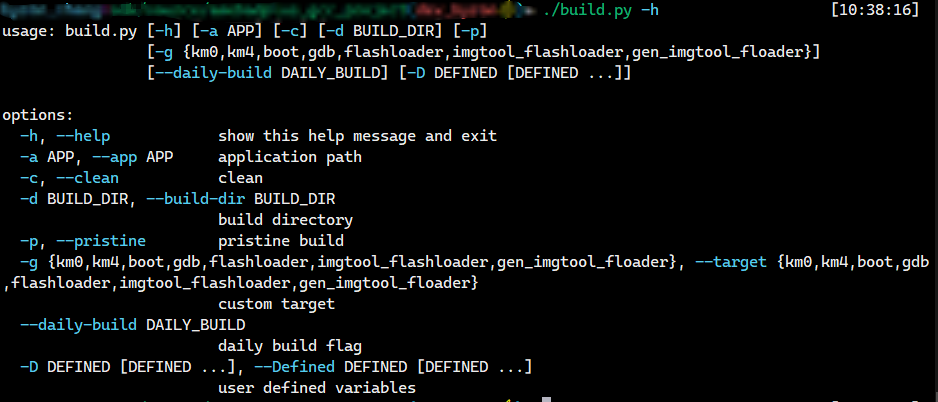

概述
本章节介绍如何搭建 GCC 编译环境，包括 Windows 平台和 Linux 平台。
Windows 平台：以 Windows 10 64-bit 为例。
Linux 平台：以 Ubuntu 22.04 x86_64 为例。
准备 GCC 编译环境
GCC 编译环境包括cmake编译环境，python环境，以及其它一些工具软件，如下表所示。
Software |
Version |
|---|---|
cmake |
>=3.20 |
ninja |
>=1.10.1 |
ccache |
>=4.5.1 |
python3 |
>=3.10 |
wget |
recommand newest |
7zip |
recommand newest |
用户可以采用两种方式搭建环境：
方式1: 下载我们提供的装软件合集包，并在编译前运行脚本自动配置环境变量。（这种方式不会影响用户原先的软件环境，并且可以避免软件版本带来的兼容性问题）
方式2: 自行下载需要的工具软件，并自行配置对应的环境变量。(如果用户希望使用本地已有的环境，也可以手动下载所需要的软件，但这种方式可能会影响用户的其他环境)
下载压缩包并解压至
/opt/rtk-toolchain文件夹下
mkdir /opt/rtk-toolchain cd /opt/rtk-toolchain wget https://github.com/Ameba-AIoT/ameba-toolchain/releases/download/prebuilds-v1.0.0/prebuilts-linux-1.0.0.tar.gz tar -xzf prebuilts-linux-1.0.0.tar.gz备注
压缩包需要解压到指定的
/opt/rtk-toolchain路径下，如果要更改路径，需要同步修改ameba.sh中的相关变量。如果下载遇到问题，可尝试使用aliyun地址：https://rs-wn.oss-cn-shanghai.aliyuncs.com/prebuilts-linux-1.0.0.tar.gz
由于linux下无法提供python的免安装版本，所以需要用户预装python。
sudo apt install python3 python3-pip python3-venv备注
运行
python --version检查python版本， 建议大于 3.10。如果主机中存在多个版本的python，可以使用命令
update-alternatives --install /usr/bin/python python /usr/bin/python3.x 1选择特定版本的python，x代表期望的版本号。如果出现报错
command 'python' not found，尝试运行ln -s /usr/bin/python3 /usr/bin/python解决问题。
进入到SDK根目录，运行
ameba.sh脚本，将自动配置环境变量。
source ameba.sh
备注
每次重启终端后，都需要执行
source ameba.sh命令设置环境变量
在C盘下新建
C:\rtk-toolchain文件夹下载压缩包并解压至
C:\rtk-toolchain文件夹下，可点击下方任意链接下载，中国大陆地区用户建议使用aliyun链接。备注
压缩包需要解压到指定的
C:\rtk-toolchain路径下，如果要更改路径，需要同步修改ameba.bat中的相关变量。进入到SDK根目录， 双击 运行根目录下的
ameba.bat，将自动配置环境变量，后续请继续在此窗口运行命令。
备注
如果用户想在Windows下使用 Git Bash 或 MSYS2 等类Unix的命令行环境，那么请在SDK根目录下打开新终端后运行
source ameba.sh。此方式依赖python虚拟环境，若出现 python 系统错误，如提示找不到 dll 动态库等，请尝试手动删除SDK根目录下的
.venv文件夹并运行ameba.bat脚本，将自动重新安装python虚拟环境。
安装软件，需要用户拥有sudo 权限：
sudo apt-get install cmake ninja ccache wget python3 python3-pip python3-venv安装pip包
进入SDK根目录运行：
pip install -r tools/requirements.txt备注
对于pip包的安装，推荐客户采用python虚拟环境，这样可以避免Realtek的pip包对用户本地已有的包产生干扰。
进入SDK的根目录下，运行
python -m venv .venv建立虚拟环境。输入
source .venv/bin/activate激活虚拟环境。（每次重启终端后都需要运行激活命令）在虚拟环境下运行
pip install -r tools/requirements.txt指令，相关的包将会安装到.venv下。
使用Chocolatey进行软件安装。Chocolatey是Windows环境下的包管理器，可以在Windows下方便地管理所需软件的生命周期。如果拥有Windows主机的管理员权限，推荐使用Chocolatey进行安装。
安装Chocolatey
以管理员模式打开PowerShell，如果用户拥有对应权限，打开的Powershell窗口上会出现管理员标识。

在打开的Powershell窗口中执行:
Set-ExecutionPolicy AllSigned Set-ExecutionPolicy Bypass -Scope Process -Force; [System.Net.ServicePointManager]::SecurityProtocol = [System.Net.ServicePointManager]::SecurityProtocol -bor 3072; iex ((New-Object System.Net.WebClient).DownloadString('https://community.chocolatey.org/install.ps1'))
安装软件包
choco feature enable -n allowGlobalConfirmation choco install cmake --installargs 'ADD_CMAKE_TO_PATH=System' choco install ninja ccache python310 wget 7zip
安装pip包
进入SDK根目录运行：
pip install -r tools\requirements.txt备注
对于pip包的安装，推荐客户采用python虚拟环境，这样可以避免Realtek的pip包对用户本地已有的包产生干扰。
进入SDK的根目录下，运行
python -m venv .venv建立虚拟环境。输入
.venv\Scipts\activate.bat激活虚拟环境。（每次重启终端后都需要运行激活命令）在虚拟环境下运行
pip install -r tools\requirements.txt指令，相关的包将会安装到.venv下。
安装工具链
默认情况下，工具链会在第一次编译项目时被自动安装到默认路径下：
Linux：
/opt/rtk-toolchainWindows：
C:\rtk-toolchain
在进行项目编译之前，我们会检查工具链是否被正确安装以及版本是否匹配。如果弹出报错信息，请根据报错信息修复问题并尝试重新编译。
工具链压缩包默认托管在github上，首次编译时会尝试从github下载工具链压缩包。如果下载遇到问题，请确认主机是否可以正确访问github。如果无法正常访问，请通过以下命令更换下载源：
build.py -D USE_ALIYUN_URL=True
如果需要修改工具链安装路径，请修改在
cmake/toolchain/ameba-toolchain-xxx.cmake中的TOOLCHAINDIR变量。
备注
如果工具链安装仍然失败，请手动下载安装。
在C盘创建
rtk-toolchain文件夹。
下载工具链压缩包.
请用户根据当前SDK使用的工具链版本，从
${SDK}/cmake/toolchain/ameba-toolchain-asdk-${v_ASDK_VER}.cmake或${SDK}/cmake/toolchain/ameba-toolchain-vsdk-${v_VSDK_VER}.cmake文件中获取对应工具链压缩包的URL下载地址。其中，v_ASDK_VER与v_VSDK_VER为对应的工具链版本，可从${SDK}/CMakeLists.txt中获取。解压
asdk-10.3.x-mingw32-newlib-build-xxxx.zip至C:\rtk-toolchain并重命名为asdk-10.3.x-xxxx。其中xxxx为工具链的数字版本号，在解压后的文件夹命名中添加版本号可避免不同版本软件的覆盖。
在
/opt路径下创建文件夹rtk-toolchain。mkdir /opt/rtk-toolchain下载工具链压缩包至
/opt/rtk-toolchain下请用户根据当前SDK使用的工具链版本，从
${SDK}/cmake/toolchain/ameba-toolchain-asdk-${v_ASDK_VER}.cmake或${SDK}/cmake/toolchain/ameba-toolchain-vsdk-${v_VSDK_VER}.cmake文件中获取对应工具链压缩包的URL下载地址。其中，v_ASDK_VER与v_VSDK_VER为对应的工具链版本，可从${SDK}/CMakeLists.txt中获取。解压
asdk-10.3.1-linux-newlib-build-xxxx.tar.bz2至/opt/rtk-toolchain并重命名为asdk-10.3.x-xxxx。其中xxxx为工具链的数字版本号，在解压后的文件夹命名中添加版本号可避免不同版本软件的覆盖。例如，名为asdk-10.3.1-linux-newlib-build-4291-x86_64_with_small_reent.tar.bz2的压缩包解压后应该重命名为asdk-10.3.1-4291。
备注
工具链的解压路径需和上述路径保持一致，除非在
cmake/toolchain/ameba-toolchain-xxx.cmake中修改默认的toolchain路径。如果在
cmake/toolchain/ameba-toolchain-xxx.cmake中定义的路径下没有检测到可用工具链，第一次编译时会自动创建下载任务。如果在
cmake/toolchain/ameba-toolchain-xxx.cmake中定义的路径下检测到正确版本的压缩包，脚本也会自动进行解压和重命名操作。
{kind=link}
{kind=link}
{kind=link}
编译代码
编译SDK需要在IC的project路径下进行，IC对应的GCC project路径如下所示：
GCC project |
Directory |
|---|---|
KM4 |
{SDK}\amebadplus_gcc_project\project_km4 |
KM0 |
{SDK}\amebadplus_gcc_project\project_km0 |
GCC project |
Directory |
|---|---|
KM4 |
{SDK}\amebalite_gcc_project\project_km4 |
KR4 |
{SDK}\amebalite_gcc_project\project_kr4 |
GCC project |
Directory |
|---|---|
KM4 |
{SDK}\amebalite_gcc_project\project_km4 |
KR4 |
{SDK}\amebalite_gcc_project\project_kr4 |
GCC project |
Directory |
|---|---|
CA32 |
{SDK}\amebasmart_gcc_project\project_ap |
KM4 |
{SDK}\amebasmart_gcc_project\project_hp |
KM0 |
{SDK}\amebasmart_gcc_project\project_lp |
备注
将表格中的 {SDK} 替换为用户自己的SDK路径。
我们提供 build.py 脚本来简化项目的编译，其常用指令如下所示：
功能 |
命令 |
描述 |
|---|---|---|
帮助 |
|
列出支持的命令 |
编译 |
|
增量编译工程 |
纯净编译 |
|
移除所有产物并编译工程 |
指定示例 |
|
编译名为 APP 的示例 |
指定目标 |
|
编译指定的 target |
清理 |
|
清理编译产物 |
下载 |
|
通过GDB下载固件 |
调试 |
|
进入调试模式 |
帮助指令
如果您是第一次使用
build.py脚本，可以通过下面命令了解此脚本的用法。build.py -h通过
-h或--help选项，所有支持的命令将会被列出。 纯净编译
build.py -p纯净编译意味着此次编译环境没有之前残留产物的影响，所有之前编译的产物都会在此次编译之前被移除。
-p选项和--pristine选项等价。增量编译
build.py如果不带任何参数，项目将会进行增量编译，增量编译和全量编译相比会大大节省时间花费。
指定编译目录并编译
build.py -d <BUILD_DIR>此命令可指定存放中间产物的目录。如果不指定此选项，默认将会创建
build文件夹存放。编译指定example
build.py -a <APP>${SDK}/component/example目录下提供了丰富的应用示例。如果您想要编译其中一个示例，可以通过-a或--app将应用名称传递给build.py。例如，编译
${SDK}/component/example/network_protocol/http_client示例，您可以输入以下命令：build.py -a http_client如果不通过
-a传入APP名，将编译一个默认的空项目。编译指定目标
build.py -g <TARGET>默认情况下，所有必要的目标将被一起编译。可以通过
-g或--target选项单独编译特定的目标。可以通过-h选项查看所有可用目标。例如，要重新生成 imgtool flashloader，需输入以下命令：
build.py -g gen_imgtool_floader项目清理
build.py -c-c和--clean都可以清理当前项目的产物及中间文件。传递CMake的cache变量
build.py -D CACHE_VAL1=VALUE1 CACHE_VAL2=VALUE2 …CMake 可以通过
-D选项设置cache变量的初始值。为了继承这一功能，build.py也同样支持-D选项。CMake 预定义的值和用户自定义的值都可以放在-D后面。 更多关于本项目cache变量的描述，请参考${SDK}/amebaxxx_gcc_project目录下的CMakeLists.txt文件。备注
CMake 原生的
-D与build.py的-D之间的不同之处在于，CMake 要求每个变量定义前都要有-D前缀，例如-DCACHE_VAL1=VALUE1 -DCACHE_VAL2=VALUE2而
build.py要求所有变量跟随在一个单独的-D后面，并在-D和变量之间留有空格。例如：-D CACHE_VAL1=VALUE1 CACHE_VAL2=VALUE2
{kind=link}
固件文件
编译完成后，image文件将被拷贝到
\amebadplus_gcc_project路径下，用户也可以在如下文件夹看到image文件：\amebadplus_gcc_project\project_km0\asdk\image\amebadplus_gcc_project\project_km4\asdk\image
CMake生成的中间文件将会被存放在
build文件夹。如果生成失败, 尝试运行
build.py -c或ninja clean后重新编译。

KM4 & KM0 projects 编译日志

KM4 & KM0 image 生成
备注
如果想要获取 .map 文件进行调试， 请在如下路径中查找：
\amebadplus_gcc_project\project_km0\asdk\image\amebadplus_gcc_project\project_km4\asdk\image
编译完成后，image文件将被拷贝到
\amebalite_gcc_project路径下，用户也可以在如下文件夹看到image文件：\amebalite_gcc_project\project_km0\asdk\image\amebalite_gcc_project\project_km4\asdk\image
CMake生成的中间文件将会被存放在
build文件夹。如果生成失败, 尝试运行
build.py -c或ninja clean后重新编译。

KM4 & KR4 projects 编译日志

KM4 & KR4 image 生成
备注
如果想要获取 .map 文件进行调试， 请在如下路径中查找：
amebalite_gcc_project\project_kr4\vsdk\imageamebalite_gcc_project\project_km4\asdk\image
编译完成后，image文件将被拷贝到
\amebalite_gcc_project路径下，用户也可以在如下文件夹看到image文件：\amebalite_gcc_project\project_km0\asdk\image\amebalite_gcc_project\project_km4\asdk\image
CMake生成的中间文件将会被存放在
build文件夹。如果生成失败, 尝试运行
build.py -c或ninja clean后重新编译。
KM4 & KR4 projects 编译日志
KM4 & KR4 image 生成
备注
如果想要获取 .map 文件进行调试， 请在如下路径中查找：
amebalite_gcc_project\project_kr4\vsdk\imageamebalite_gcc_project\project_km4\asdk\image
编译完成后，image文件将被拷贝到
\amebasmart_gcc_project路径下，用户也可以在如下文件夹看到image文件：\project_hp\asdk\image\project_lp\asdk\image\project_ap\asdk\image
CMake生成的中间文件将会被存放在
build文件夹。如果生成失败, 尝试运行
build.py -c或ninja clean后重新编译。

KM4 & KM0 & CA32 编译日志

KM4 & KM0 & CA32 image 生成
备注
如果想要获取 .map 文件进行调试， 请在如下路径中查找：
\project_hp\asdk\image\project_lp\asdk\image\project_ap\asdk\image
固件下载
我们提供了 ImageTool 专门用于固件的下载，请参考 Image Tool.